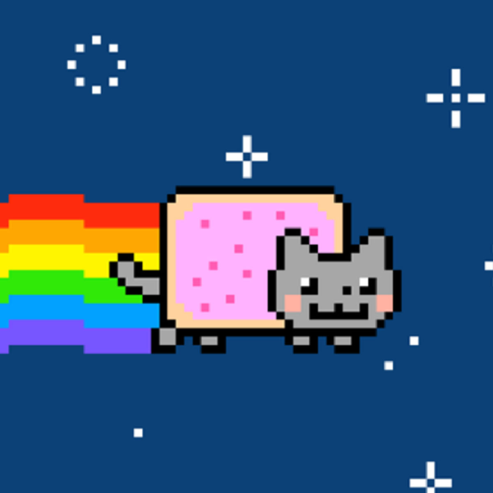

Gato Nyan

Ficha Técnica:
Nome: Gato Nyan
Nomes alternativos: Nyan Cat, Gato Arco-Íris, Gato Pop-Tart, O Rastro, Gato Cósmico
Raça: Desconhecida
Tipo da raça: Cósmico Interdimensional
Nivel de ameaça: Alto
Características físicas:
- Corpo composto por uma substância semelhante a um biscoito retangular
- Aparência pixelada, como se não pertencesse à nossa resolução de realidade
- Emite um rastro arco-íris permanente por onde passa
- Flutua constantemente - nunca foi visto tocando o chão
- Emite uma melodia 8-bit constante e incessante
- Tamanho estimado de 30cm, porém difícil de medir devido à velocidade
Capacidades:
- Voo em velocidades que excedem Mach 15
- Viagem interdimensional através do espaço sideral
- O rastro arco-íris é uma fissura dimensional que não se fecha por horas
- A melodia 8-bit causa loucura progressiva em quem a ouve por mais de 30 minutos
- Imunidade total a vácuo, radiação, temperaturas extremas e impactos
- Já foi rastreado em órbita ao redor de Saturno
- Sua existência pixelada sugere que ele não pertence à nossa realidade
Fraquezas:
- Não parece ter intenção hostil - ele apenas voa sem parar
- Nunca interage com seres vivos ou objetos diretamente
- O rastro arco-íris se dissipa naturalmente após algumas horas
- Parece ser atraído por sinais de rádio em frequências específicas
Como contê-lo:
CONTENÇÃO IMPOSSÍVEL: O Gato Nyan não pode ser contido. Ele se move pelo espaço a velocidades impossíveis e atravessa qualquer barreira física ou dimensional. Todas as tentativas de captura falharam. A NASA e três agências espaciais estão cientes de sua existência. As fissuras arco-íris que ele deixa já causaram dois incidentes dimensionais classe 3. Se você avistar um rastro arco-íris no céu, evacue a área imediatamente - a fissura pode sugar objetos próximos para dimensões desconhecidas.
Relato do Dr. Cosmos:
Dr. Cosmos é astrofísico e foi o primeiro cientista da M.I.A.U a rastrear o Gato Nyan via satélite.
"Nossos satélites detectaram uma anomalia em órbita terrestre. Algo se movia a Mach 15 deixando um rastro de radiação cromática. Quando ampliamos a imagem, era um gato. Um gato pixelado voando pelo espaço com um corpo de biscoito e um arco-íris atrás. Eu achei que era uma falha no sensor. Não era. Ele orbita a Terra aproximadamente 4 vezes por dia, para ocasionalmente, viaja até Saturno e volta. A melodia que ele emite é captada por nossos rádios e três operadores já foram afastados por insanidade. O mais perturbador é que quando analisamos sua composição visual, ele tem exatamente 34 pixels de altura. Ele não pertence à nossa realidade. Ele é de outra resolução."
Variações:
Há registros não confirmados de outros gatos pixelados em dimensões acessadas através do rastro arco-íris. Acredita-se que o Gato Nyan seja um emissário de uma dimensão composta inteiramente por entidades em 8-bit.
História:
A história do Gato Nyan ainda está sendo documentada.